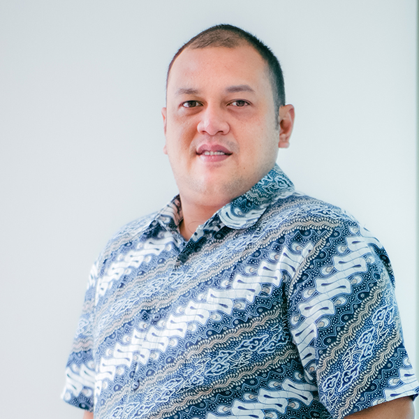

About

Jonathan Wisnu P. Worotikan
- Birthday: October 26th, 1986
- Website: jworotikan.github.io
- City: Kota Bogor, Indonesia
- Phone: (+62) 878-804-99699
- Email: jonathan.worotikan@gmail.com
- Freelance: Available
I'm an IT Manager & Operations Manager with 10+ years of experience, having evolved from a Full-Stack Software Engineer into a strategic technology leader. Currently at PT. Teknologi GoVirtual Indonesia, I lead the development of immersive 3D Virtual Tour platforms deployed on official Indonesian government servers — managing everything from development and QA to production-to-live server migration. My work also spans Odoo ERP customization, PHP Laravel engineering, cloud infrastructure (AWS, Linux/CentOS), HRIS development, and cross-divisional IT management, reporting directly to the CEO.
What I Do
Transforming ideas into scalable, reliable, and beautiful digital experiences.
3D Virtual Tour Platforms
End-to-end development of immersive 3D virtual tour platforms for Indonesian government clients. Full production-to-live server migration managed.
Custom Software & Odoo
Tailored applications & Odoo modules: Work Permit, High-Risk Permit, Lost & Found, Survey Export, HRIS, and Project Management systems.
Backend & DevOps
Secure, scalable systems with PHP Laravel, Python, Node.js, MySQL, PostgreSQL, AWS, Linux/CentOS server, cPanel, and Docker.
IT & Operations Management
IT infrastructure planning, CAPEX/OPEX management, vendor coordination, team leadership, and cross-divisional project management.
Technical Skills & Certifications
Core competencies and certifications achieved.
Languages
PHP, Python, JavaScript, Node.js, VB.Net
Web & Frontend
HTML5, CSS3, Tailwind CSS, XML, React Native
Frameworks
PHP Laravel, Express.js, React Native
Databases
MySQL, PostgreSQL, Firebase
Cloud & Server
AWS, Linux/CentOS, cPanel, Docker, Git, Server Migration
ERP & Tools
Odoo (Module Development & Customization), Pano2VR, Network Architecture, Adobe Creative Suite, FLStudio
Resume
Summary
Jonathan Worotikan
IT Manager & Operations Manager with 10+ years of experience in software development, system administration, and network engineering. Currently leading the development of immersive 3D Virtual Tour platforms for Indonesian government clients at PT. Teknologi GoVirtual Indonesia. Skilled in PHP Laravel, Odoo customization, Python, Node.js, PostgreSQL, and AWS. Delivered impactful products including HRIS systems, e-Wallet apps, e-Learning platforms, Odoo permit modules, and government-scale web platforms. Passionate about clean code, automation, and scalable architecture. Currently pursuing a Bachelor's in Information Systems at Universitas Terbuka.
Education
Bachelor of Information Systems (in progress)
2024 – Present
Universitas Terbuka, Bogor
Languages
Bahasa Indonesia
Native
English
Professional
Experience & Projects
Professional journey and highlighted works.
IT Manager & Operations Manager
Oct 2025 – Present
PT. Teknologi GoVirtual Indonesia · Jakarta
- Lead all IT operations and cross-divisional workflows, reporting directly to the CEO
- Directed end-to-end development of immersive 3D Virtual Tour platforms deployed on official government servers
- Managed full production-to-live server migration for all government platforms
- Built govirtual.id — company website
- Engineered internal HRIS (attendance, leave, payroll) and Project Management System — PHP Laravel + Tailwind + MySQL
- Currently developing Portal Eksplorasi Indonesia with Bappenas
- Oversee CAPEX/OPEX procurement, resource allocation, and vendor management
IT Officer & Programmer
Apr 2024 – Jul 2025
Living World Grand Wisata · Bekasi
- Developed custom Odoo modules: Work Permit, High-Risk Permit, Goods Entry/Exit, Lost & Found, Survey Export to Excel
- Managed IT infrastructure setup during mall construction — vendor coordination & hardware deployment
- Led full SDLC for internal applications: analysis → DB design → build → go-live
- Cross-departmental IT support minimizing downtime and managing hardware procurement
IT Manager & Software Engineer
Jun 2017 – Jan 2024
PT. I-Management Indonesia · Jakarta
- Led digital transformation for corporate clients — converting paper-based processes to digital workflows
- Engineered e-Learning platform, Human Capital Assessment (psychometric), and Interactive Class Portal
- Built rekap.kemdikbud.go.id — full-stack reporting for Ministry of Education
- Developed cross-platform e-Wallet application (iOS & Android)
- Clients: Bank Mayora · Wilmar Group · Mayapada Bank · Bank Papua
IT Programmer
Jun 2018 – Mar 2024
PT. Inter Pan Pasifik Futures · Jakarta
- Designed and maintained custom trading platform websites and business applications
- Managed full SDLC from conceptualization to deployment
- Delivered: volksfx.com · fxinterpan.com
PIC Sales & Marketing, Bogor Region
Jun 2016 – Dec 2016
X-TRO – XL AXIATA · Bogor
- Led 50-person sales force for XL SIM card activations across Bogor region
- Achieved highest regional sales volume among all regions within 3 months
Network & Software Engineer
Jul 2010 – Jun 2016
CV. Withtech · Bogor
- Built internet cafe & game center networks: The Train Bogor · Cyber Net Bogor · Emperor Yogyakarta & Ambarawa
- Deployed POS & inventory systems: Highland Park Resort · Toko Indo Cahaya · CV Megaria · CV WIYANATA
- Server & network infrastructure: PT. Sinar Gemilang (Lampung) · Balai Pengobatan Pelangi Kasih (Bogor)
- Websites: fideltoys.com · jamsejahtera.com · putikindonesiaberkarya.com
3D Virtual Tour Platforms
5 live government platforms (Semarang, Jakarta, Lampung Selatan, Lahat, govirtual.id)
HRIS Application
Attendance, leave & payroll system — PHP Laravel + Tailwind + MySQL
Odoo Module Suite
Work Permit, High-Risk Permit, Lost & Found, Goods Entry/Exit, Survey Export
e-Wallet App
Cross-platform mobile fintech app (iOS & Android)
e-Learning & LMS
Gamified learning platform with online assessments & psychological tests
rekap.kemdikbud.go.id
Full-stack data reporting system — Ministry of Education
Project Management App
Internal cross-team task & project tracking system
Corporate IT Projects
Bank Mayora · Wilmar Group · Bank Papua · Mayapada Bank
🔜 In Progress
Portal Eksplorasi Indonesia — collaboration with Bappenas
Virtual Tour Platforms
Immersive 3D platforms built and deployed on official Indonesian government servers.
Kota Semarang
Official 3D virtual tour platform for the City of Semarang government portal.
DKI Jakarta
Interactive virtual tour integrated into the official Enjoy Jakarta government platform.
Lampung Selatan
Regional government platform featuring 3D virtual tour capabilities.
Lahat
3D virtual tour platform for Kabupaten Lahat on the GoVirtual infrastructure.
GoVirtual Indonesia
Company website and product showcase platform for GoVirtual's digital solutions.
Portal Eksplorasi Indonesia
National digital exploration portal developed in collaboration with Bappenas.
Portfolio
Selected works in software development, UI/UX, and multimedia.

Contact
Location:
Cimanggu, Tanah Sareal — Bogor, West Java
Email:
jonathan.worotikan@gmail.com
Call / WhatsApp:
+62 878-804-99699